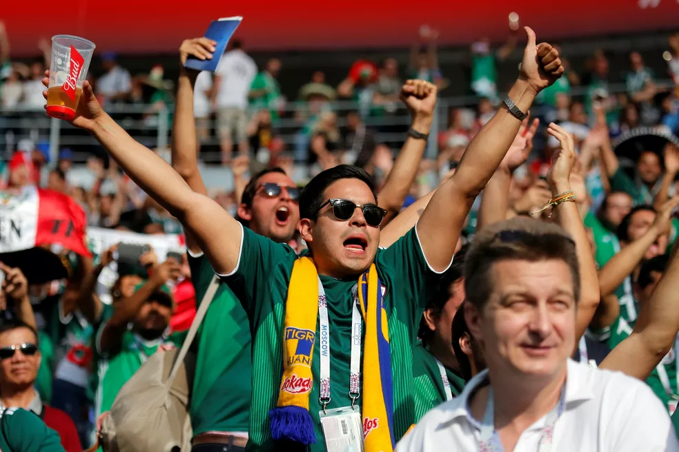

O México está prestes a fazer história: será o primeiro país a sediar três edições da Copa do Mundo da FIFA™, desta vez junto com os Estados Unidos e o Canadá, e disputará o torneio pela 18ª vez. É uma das seleções com mais participações em toda a história. O país foi anfitrião da Copa do Mundo pela última vez em 1986, chegando às quartas de final – feito que já havia alcançado em 1970. O apoio da torcida foi fundamental em ambas as ocasiões. Desta vez, sob o comando de Javier Aguirre, jogador da seleção de 1986, o México tentará superar a fase que não consegue ultrapassar desde então.
Seleção
HISTÓRIA
A melhor Copa
do Mundo
México
As melhores campanhas do México foram justamente quando sediou a competição. Em ambas as edições chegou às quartas de final: em 1970, sob o comando de Raúl Cárdenas, foi eliminado com uma derrota por 4 a 1 pela Itália, e em 1986, com Bora Milutinovic no comando, saiu do torneio ao perder da Alemanha nos pênaltis, após empate sem gols no tempo normal.
1970
Na Copa do Mundo de 1970, a Seleção Mexicana conquistou a sua melhor campanha histórica até aquele momento. Jogando em casa com o forte apoio da torcida, o México quebrou um longo tabu e conseguiu se classificar para as quartas de final pela primeira vez.
1986
Em 1986, o México voltou a sediar a Copa do Mundo e repetiu a sua melhor campanha da história, chegando novamente às quartas de final e terminando o torneio de forma invicta no tempo regulamentar. O país assumiu a organização às pressas após a Colômbia desistir por motivos financeiros.

Momentos inesquecíveis
01
A edição do México 1986 representa uma lembrança especial para a torcida, não apenas pelo calor humano que vinha das arquibancadas, mas também pelo futebol apresentado sob o comando de Bora Milutinovic.
02
Na França 1998, integrando o Grupo E, venceu a República da Coreia, empatou com a Bélgica e chegou ao jogo decisivo precisando pontuar contra os Países Baixos.
03
Luis Hernández e Javier Hernández compartilham mais do que o sobrenome: ambos lideram a artilharia mexicana na história da Copa do Mundo com quatro gols cada.
04
A seleção mexicana foi uma das 13 participantes do Uruguai 1930, o torneio de estreia que teve os anfitriões como campeões. O México disputou o jogo inaugural contra a França, depois enfrentou o Chile e encerrou sua participação contra a Argentina.
Detalhes
culturais do país